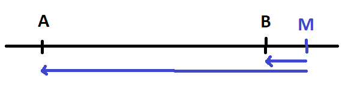

Régression quantile ou régression L1#
La régression quantile est moins sensible aux points aberrants. Elle peut être définie comme une régression avec une norme L1 (une valeur absolue).
Médiane et valeur absolue#
On considère un ensemble de nombre réels \(\acc{X_1,...,X_n}\). La médiane est le nombre M qui vérifie :
Plus simplement, la médiane est obtenue en triant les éléments \(\acc{X_1,...,X_n}\) par ordre croissant. La médiane est alors le nombre au milieu \(X_{\cro{\frac{n}{2}}}\).
propriété P1 : Médiane et valeur absolue
La médiane M de l’ensemble \(\acc{X_1,...,X_n}\) minimise la quantité \(E = \sum_i \abs{X_i - M}\).
Avant de démontrer la propriété, voyons ce qu’il se passe entre deux réels. La médiane de \(\acc{A,B}\) peut être n’importe où sur le segment.

De manière évidente, les distances des deux côtés du point M sont égales : \(a+b = c+d\). Mais si M n’est pas sur le segment, on voit de manière évidente que la somme des distances sera plus grande.
{kind=link}
N’importe quel point sur le segment M minimise \(\abs{A - M} + \abs{B - M}\). On revient aux n réels triés par ordre croissant \(\acc{X_1,...,X_n}\) et on considère les paires \((X_1, X_n)\), \((X_2, X_{n-1})\), …, \(\pa{X_{\cro{\frac{n}{2}}}, X_{\cro{\frac{n}{2}+1}}}\). L’intersection de tous ces intervalles est \(\pa{X_{\cro{\frac{n}{2}}}, X_{\cro{\frac{n}{2}+1}}}\) et on sait d’après la petit exemple avec deux points que n’importe quel point dans cet intervalle minimise \(\abs{X_1 - M} + \abs{X_n - M} + \abs{X_2 - M} + \abs{X_{n-1} - M} + ... = E\). La propriété est démontrée.
Régression et quantile#
Maintenant que la médiane est définie par un problème de minimisation, il est possible de l’appliquer à un problème de régression.
Définition D1 : Régression quantile
On dispose d’un ensemble de n couples \((X_i, Y_i)\) avec \(X_i \in \R^d\) et \(Y_i \in \R\). La régression quantile consiste à trouver \(\alpha, \beta\) tels que la somme \(\sum_i \abs{\alpha + \beta X_i - Y_i}\) est minimale.
Résolution d’une régression quantile#
La première option consiste à utiliser une méthode de descente de gradient puisque la fonction \(E = \sum_i \abs{X_i - M}\) est presque partout dérivable. Une autre option consiste à utiliser l’algorithme Iteratively reweighted least squares. L’implémentation est faite par la classe QuantileLinearRegression. L’algorithme est tiré de [Chen2014].
Algorithme A1 : Iteratively reweighted least squares
On souhaite trouver les paramètres \(\Omega\) qui minimise :
Etape 1
On pose \(\forall i, \, w_i^t = 1\).
Etape 2
On calcule \(\Omega_t = \arg \min E(\Omega)\) avec \(E_t(\Omega) = \sum_i w_i^t \pa{Y_i - f(X_i, \Omega)}^2\).
Etape 3
On met à jour les poids \(w_i^{t+1} = \frac{1}{\max\acc{\delta, \abs{Y_i - f(X_i, \Omega_t)}}}\). Puis on retourne à l’étape 2.
Le paramètre \(\delta\) gère le cas où la prédiction est identique à la valeur attendue pour un point \(X_i\) donné. Il y a plusieurs choses à démontrer. On suppose que l’algorithme converge, ce qu’on n’a pas encore démontré. Dans ce cas, \(\Omega_t = \Omega_{t+1}\) et les coefficients \(\Omega_t\) optimise la quantité :
On remarque également que \(E_t(\Omega_t)\) est l’erreur L1 pour les paramètres \(\Omega\). Donc si l’algorithme converge, celui-ci optimise bien l’erreur de la régression quantile. Dans le cas d’une régression linéaire, on sait exprimer la solution :
D’après le théorème du point fixe, on sait que la suite converge si la fonction g est contractante.
Quantile et optimisation#
De la même manière que nous avons défini la médiane comme la solution d’un problème d’optimisation, nous pouvons définir n’importe quel quantile comme tel.
propriété P2 : Quantile et optimisation
Le quantile \(Q_p\) de l’ensemble \(\acc{X_1,...,X_n}\) est le nombre qui vérifie :
Ce nombre minimise la quantité :
Où \(\abs{a}^+ = \max\acc{a, 0}\) et \(\abs{a}^- = \max\acc{-a, 0}\).
On vérifie qu’on retrouve bien ce qui était énoncé pour la médiane avec \(p=\frac{1}{2}\). Il faut démontrer que la solution de ce programme d’optimisation atterrit dans l’intervalle souhaité.

On choisit un réel P à l’intérieur d’un intervale et on calcule : \(E(P) = \sum_i p \abs{X_i - P}^+ + (1-p) \abs{X_i - P}^-\). On note \(a(P) = \sum_{i=1}^n \indicatrice{X_i < P}\) et \(b(P) = \sum_{i=1}^n \indicatrice{X_i > P}\). Comme le point P est à l’intérieur d’un intervalle, \(a+b = n\). Soit dx un réel tel que \(P+dx\) soit toujours dans l’intervalle :
On voit que si P est choisi de telle sorte que \(a(P) = np\), la fonction \(E(P)\) est constante sur cette intervalle et c’est précisément le cas lorsque \(P=Q_p\). Comme la fonction E est une somme positive de fonctions convexes, elle l’est aussi. Si on a trouvé un intervalle où la fonction est constante alors celui-ci contient la solution. Sinon, il suffit juste de trouver les intervalles \((X_{i-1}, X_i)\) et \((X_i, X_{i+1})\) pour lesquelles la fonction E est respectivement décroissante et croissante. On cherche donc le point P tel que \(a(P) < pn\) si \(P < X_i\) et \(a(P) > pn\) si \(P > X_i\) et ce point correspond au quantile \(Q_p\). Ceci conclut la démonstration.
Régression quantile pour un quantile p quelconque#
Comme pour la médiane, il est possible de définir la régression quantile pour un quantile autre que la médiane.
Définition D2 : Régression quantile
On dispose d’un ensemble de n couples \((X_i, Y_i)\) avec \(X_i \in \R^d\) et \(Y_i \in \R\). La régression quantile consiste à trouver \(\alpha, \beta\) tels que la somme \(\sum_i p \abs{\alpha + \beta X_i - Y_i}^+ + (1-p) \abs{\alpha + \beta X_i - Y_i}^-\) est minimale.
Résolution d’une régression quantile pour un quantile p quelconque#
La première option consiste encore à utiliser une méthode de descente de gradient puisque la fonction à minimiser est presque partout dérivable. On peut aussi adapter l’algorithme Iteratively reweighted least squares. L’implémentation est faite par la classe QuantileLinearRegression (voir [Koenker2017]).
Algorithme A2 : Iteratively reweighted least squares
On souhaite trouver les paramètres \(\Omega\) qui minimise :
Etape 1
On pose \(\forall i, \, w_i^t = 1\).
Etape 2
On calcule \(\Omega_t = \arg \min E(\Omega)\) avec \(E_t(\Omega) = \sum_i w_i^t \pa{Y_i - f(X_i, \Omega)}^2\).
Etape 3
On met à jour les poids \(w_i^{t+1} = \frac{1}{\max\acc{\delta, \frac{1}{p} \abs{\alpha + \beta X_i - Y_i}^+ + \frac{1}{1-p} \abs{\alpha + \beta X_i - Y_i}^-}}\). Puis on retourne à l’étape 2.
On suppose que l’algorithme converge, ce qu’on n’a pas encore démontré. Dans ce cas, \(\Omega_t = \Omega_{t+1}\) et les coefficients \(\Omega_t\) optimise la quantité :
Notebook#
Bilbiographie#
Des références sont disponibles sur la page de statsmodels : QuantReg ou là : Régression quantile.
Quantile Regression, 40 years on, Roger Koenker (2017)
Fast Iteratively Reweighted Least Squares Algorithms for Analysis-Based Sparsity Reconstruction Chen Chen, Junzhou Huang, Lei He, Hongsheng Li